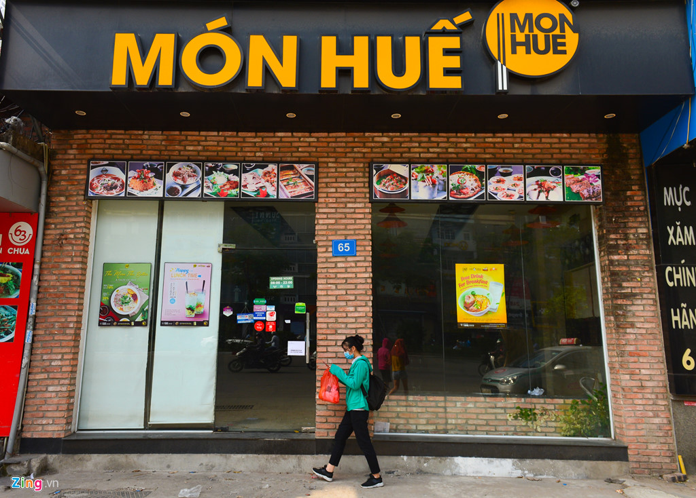

ホームページ おすすめ  いらっさいませ 生春巻きはベトナムの伝統料理です。ベトナム料理は、エビ、豚肉、野菜、ハーブ、米春雨で構成されています。それらはすべてライスペーパーに包まれています。ベトナムのフレッシュロールは、中国の春巻きや中国のビスケットロールに似た形をしているため、中国産だと考える人もいます。しかし、ほとんどのベトナム人は、ベトナムの新鮮ロールの起源はベトナムにあると考えています。ベトナムのフレッシュロールは、ベトナムの食文化で最も人気のある前菜の1つです。伝統的な食べ物は、2011年にCNN Goによって世界で最もおいしい食べ物50のリストの30位にランクされています。ベトナムの新鮮な春巻きには、特別なディップソース、魚醤、ニンニク、ライム、チリ、砕いたローストピーナッツ。ハーブ、豚肉、エビ、塩味の組み合わせ、